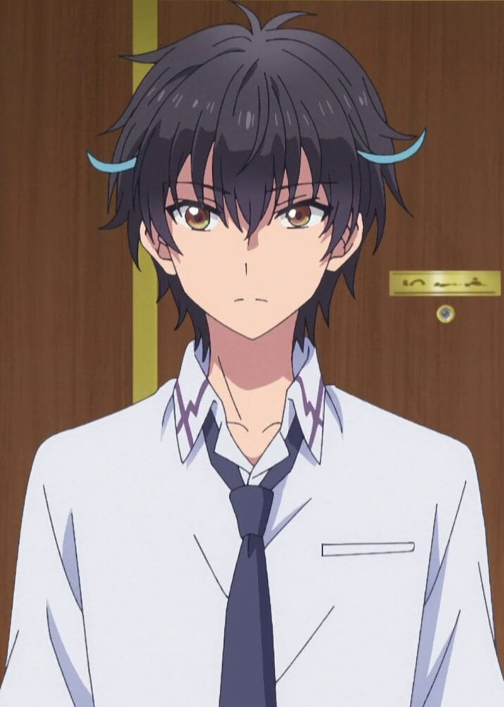

Son Goku is a saiyan warrior who was raised on Earth as a infant and is the protector of universe 7.Through relentless training and an unshakable drive to surpass his limits,
Goku has become one of the greatest martial artists in history,
saving Earth and the cosmos from countless threats.
This is 2nd fight of the webpage Goku vs. Rimuru!!
Remaining opponents
Sung Jin Woo

Yogiri Takatou
A quick look at our fighter's Strengths!
Physical Abilites
Immense Strength: Can harm god-tier and planet-level opponents.
Extreme Speed & Reflexes: Moves and reacts faster than light; fights on instinct.
Ultra Instinct: Automatically dodges and strikes at the most efficient angle without conscious thought.
Tactical Intellect: Creates strategies mid-fight, adapts to opponents rapidly.
~Now on to the Verdict~
“Although Goku is one of the strongest fighters in his verse with unmatched combat skill and raw power,
Rimuru takes the edge thanks to his broken hax abilities, reality manipulation, and immortality.”